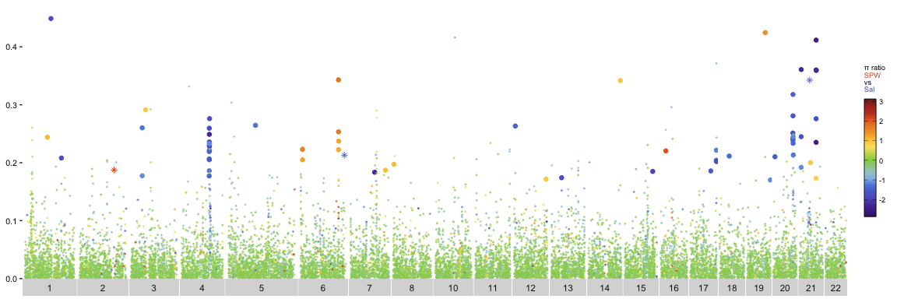
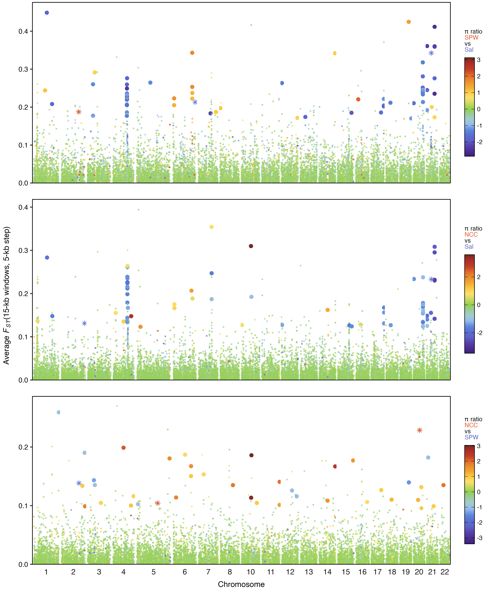
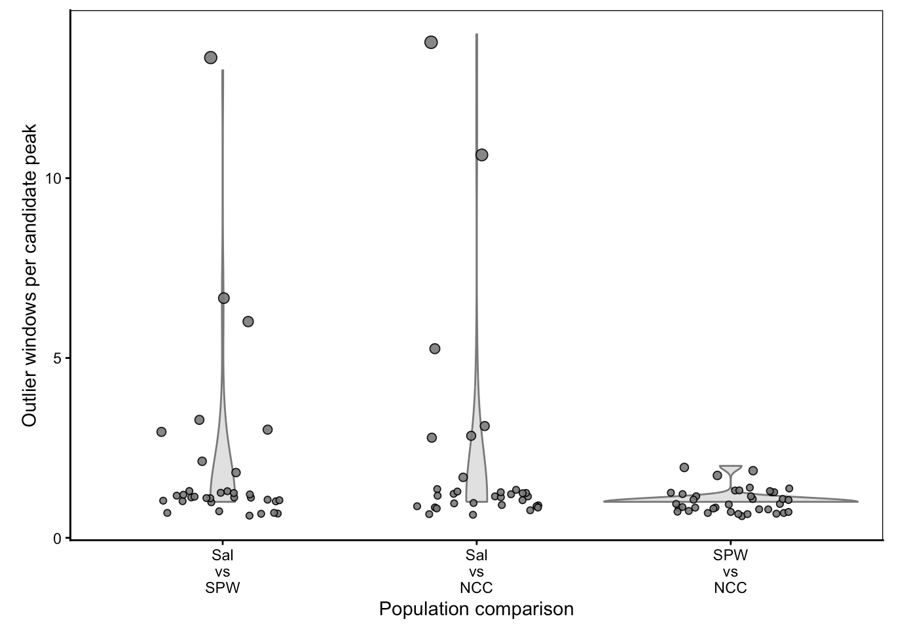
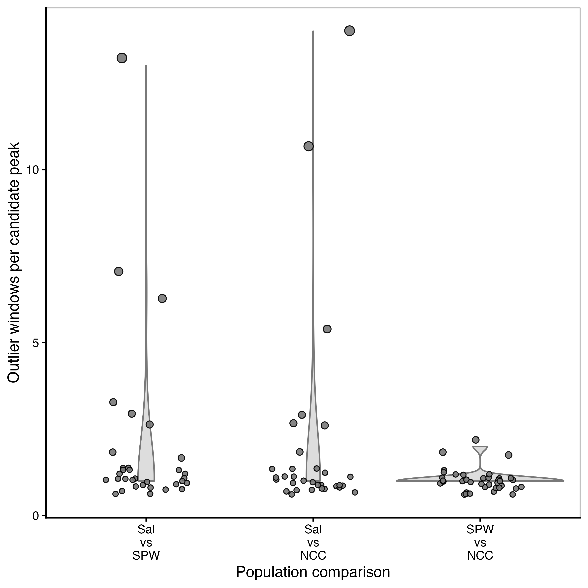

Begin with Section 1 (“Setup”) and run the code blocks from top to bottom. Use the Copy button in the upper-right corner of each block, then paste the code into R or RStudio. Text marked “required” identifies the values you must replace for your dataset.
Overview
This tutorial uses windowed nucleotide diversity (π) and FST
output from pixy to create meadow plots for pairwise
population comparisons. Each plot displays windowed FST across
chromosomes, with points colored by the log2 π ratio between the
two populations.
The workflow:
- calculates the log2 π ratio for each comparison,
- combines π ratios with windowed FST estimates,
- identifies candidate outlier windows, and
- creates and stacks the meadow plots.
Candidate outliers are identified separately for each comparison as windows in the upper 1% of FST and either the lower or upper 1% of the log2 π ratio. Negative FST estimates are removed before these thresholds are calculated.
If π equals zero in either population, the resulting infinite log2 ratio is retained and displayed as an asterisk.
Expected files and directory structure
This tutorial includes four example input files that can be used to run the complete workflow:
-
example_pixy_fst_data.csv
: windowed FST output
data containing
pop1,pop2,chromosome,window_pos_1,window_pos_2, andavg_wc_fst -
example_pixy_pi_data.csv
: windowed π output data
containing
pop,chromosome,window_pos_1,window_pos_2, andavg_pi -
example_comparison_map.txt
: defines the
comparison names (
comp), population pairs (population_1,population_2), and plotting order (plot_order) -
example_chromosome_map.txt
: connects chromosome
names in the pixy output (
chromosome) to the numeric labels used in the plots (chromo.num)
The example project uses the following structure:
meadow_plot_tutorial.Rmd
input/
├── example_pixy_fst_data.csv
├── example_pixy_pi_data.csv
├── example_comparison_map.txt
└── example_chromosome_map.txtMy suggestion is that you first run the tutorial with the
example files and then replace them with your own dataset. The
replacement files may have different names, but they must retain
the expected column structure described below. Their paths are
specified in the file-paths chunk.
Required user modifications
One code chunk must be updated for a new dataset, the other is optional:
file-paths: replace the example paths with the full paths to your input files and desired output folders (required).
example-plot: uncomment the provided line of code and replace “Sal.v.SPW” with a comparison name from the comp column of your comparison map (optional).
Additional aesthetic choices (e.g., plotting colors, point sizes, text sizes, and output dimensions) can also be modified throughout the document, but these changes are optional.
1. Setup
The packages below provide the data-wrangling, plotting, and
figure-assembly tools used throughout the tutorial. Install any
missing packages once with
install.packages("package_name"), then load them with
the below chunk.
This setup chunk also defines the default code-chunk options
and a transparent plot theme used later in the tutorial. Functions
from knitr, scales, grid,
and gtable are called explicitly with
package::function() notation.
library(dplyr)
library(tidyr)
library(readr)
library(ggplot2)
library(tibble)
library(gridExtra)
library(ggtext)
knitr::opts_chunk$set(echo = TRUE,message = FALSE,warning = FALSE,fig.align = "center")
transparent_theme <- theme(
panel.grid = element_blank(),
panel.background = element_blank(),
plot.background = element_rect(fill = "transparent", color = NA),
legend.position = "none")Set file paths
Enter the full path to each input file and choose where the processed data and plots should be saved. Using full paths allows the tutorial to run regardless of the current working directory.
The output folders will be created automatically. The final checks stop the analysis early if any required input file cannot be found.
Tip: In the line below, R looks for
example_pixy_fst_data.csv inside an
input subdirectory within the project directory
specified by project_dir:
fst_file <- file.path(project_dir, "input", "example_pixy_fst_data.csv")
Make sure your directory/file structure matches this expectation.
project_dir <- "/Users/paigeduffin/Documents/other/build_meadow.plot_tutorial" # edit to match your absolute file path to the project directory
fst_file <- file.path(project_dir, "input", "example_pixy_fst_data.csv") # edit to match your file name
pi_file <- file.path(project_dir, "input", "example_pixy_pi_data.csv") # edit to match your file name
comparison_map_file <- file.path(project_dir, "input", "example_comparison_map.txt") # edit to match your file name
chromo_map_file <- file.path(project_dir, "input", "example_chromosome_map.txt") # edit to match your file name
wrangled_dir <- file.path(project_dir, "wrangled_data")
plot_dir <- file.path(project_dir, "plots")
dir.create(wrangled_dir, showWarnings = FALSE, recursive = TRUE)
dir.create(plot_dir, showWarnings = FALSE, recursive = TRUE)
if (!file.exists(fst_file)) stop("Fst input not found: ", fst_file)
if (!file.exists(pi_file)) stop("Pi input not found: ", pi_file)
if (!file.exists(comparison_map_file)) stop("Pairwise comparisons map input not found: ", comparison_map_file)
if (!file.exists(chromo_map_file)) stop("Chromosome map input not found: ", chromo_map_file)Chromosomes & population comparison files
The comparison and chromosome maps tell the tutorial which comparisons and chromosomes to include and how to arrange them in the final figure.
Each row of the comparison map defines one pairwise comparison
using four columns: comp, population_1,
population_2, and plot_order. Population
names must exactly match those in the pixy files.
population_1 is the numerator and
population_2 is the denominator when calculating the
π ratio. Comparison names should follow the format
population_1.v.population_2 so they can be separated
correctly for the plot legends.
The chromosome map must contain chromosome and
chromo.num. Values in chromosome must
match the chromosome names in the pixy files, while
chromo.num provides the numeric chromosome labels and
plotting order.
comparison_map <- read_tsv(comparison_map_file, show_col_types = FALSE)
chromosome_map <- read_tsv(chromo_map_file, show_col_types = FALSE)
# Extract values used by the remaining analysis
chromosome_accessions <- chromosome_map %>% arrange(chromo.num) %>% pull(chromosome)
comps <- comparison_map$comp
# Order used in the final stacked figures.
plot_order <- comparison_map %>% arrange(plot_order) %>% pull(comp)2. Read the pixy output
This section imports the windowed FST and π files and checks that they contain the columns required by the remaining analysis. If a required column is missing, the tutorial stops and reports its name.
The example files are comma-separated and are read with
read_csv(). If your pixy output is tab-separated,
replace read_csv() with read_tsv() for
both files.
fst_df <- read_csv(fst_file, show_col_types = FALSE)
pi_df <- read_csv(pi_file, show_col_types = FALSE)
required_fst_columns <- c("pop1", "pop2", "chromosome", "window_pos_1", "window_pos_2", "avg_wc_fst")
required_pi_columns <- c("pop", "chromosome", "window_pos_1", "window_pos_2", "avg_pi")
if (!all(required_fst_columns %in% names(fst_df))) {
stop("The Fst file is missing: ",paste(setdiff(required_fst_columns, names(fst_df)), collapse = ", "))}
if (!all(required_pi_columns %in% names(pi_df))) {
stop("The pi file is missing: ",paste(setdiff(required_pi_columns, names(pi_df)), collapse = ", "))}3. Prepare the FST data
This section matches the FST data to the chromosome and
comparison maps. A standardized population-pair key is created by
alphabetizing each pair, allowing comparisons to be matched
regardless of whether a population appears in the
pop1 or pop2 column of the pixy
output.
Chromosomes not included in the chromosome map are removed, and
chromo.num is added for chromosome labeling and plot
order. The final check confirms that FST data were found for every
requested comparison.
pair_key <- function(pop_a, pop_b) {paste(pmin(pop_a, pop_b), pmax(pop_a, pop_b), sep = "__")}
comparison_map <- comparison_map %>% mutate(pair_key = pair_key(population_1, population_2))
fst_df_prepared <- fst_df %>%
mutate(chromo.num = match(chromosome, chromosome_accessions),pair_key = pair_key(pop1, pop2)) %>%
filter(!is.na(chromo.num)) %>%
inner_join(comparison_map %>% select(comp, pair_key),by = "pair_key") %>%
select(chromosome, chromo.num, window_pos_1, window_pos_2, comp,avg_wc_fst)
missing_fst_comparisons <- setdiff(comps, unique(fst_df_prepared$comp))
if (length(missing_fst_comparisons) > 0) {
stop("No Fst rows were found for: ", paste(missing_fst_comparisons, collapse = ", "))}
# check to make sure this df looks good so far
# see knitted document version for tutorial example output here
glimpse(fst_df_prepared)## Rows: 88,098
## Columns: 6
## $ chromosome <chr> "Scaffold_1__1_contigs__length_31190920", "Scaffold_1__1_…
## $ chromo.num <int> 1, 1, 1, 1, 1, 1, 1, 1, 1, 1, 1, 1, 1, 1, 1, 1, 1, 1, 1, …
## $ window_pos_1 <dbl> 1, 1, 1, 15001, 15001, 15001, 30001, 30001, 30001, 45001,…
## $ window_pos_2 <dbl> 15000, 15000, 15000, 30000, 30000, 30000, 45000, 45000, 4…
## $ comp <chr> "Sal.v.SPW", "Sal.v.NCC", "SPW.v.NCC", "SPW.v.NCC", "Sal.…
## $ avg_wc_fst <dbl> -0.055080978, 0.003552592, -0.006504588, 0.005248591, -0.…4. Calculate π ratios
The π data are first converted from long to wide format so that each population has its own column. The code then checks that every population listed in the comparison map is present in the π dataset.
For each comparison, the π ratio is calculated as
population_1 / population_2 and then
log2-transformed. The chromosome map is joined to the resulting
table, and chromosomes without a matching chromo.num
value are removed.
pi_df_wide <- pi_df %>%
select(pop, chromosome, window_pos_1, window_pos_2, avg_pi) %>%
pivot_wider(names_from = pop, values_from = avg_pi)
expected_populations <- unique(c(comparison_map$population_1,comparison_map$population_2))
missing_pi_populations <- setdiff(expected_populations,names(pi_df_wide))
if (length(missing_pi_populations) > 0) {
stop("The pi file contains no data for: ",
paste(missing_pi_populations, collapse = ", "))}
# Calculate the pi ratio for every comparison in comparison_map
pi_df_ratios <- lapply(seq_len(nrow(comparison_map)), function(i) {
comparison_name <- comparison_map$comp[[i]]
population_1 <- comparison_map$population_1[[i]]
population_2 <- comparison_map$population_2[[i]]
pi_df_wide %>%
transmute(chromosome,window_pos_1,window_pos_2,
comp = comparison_name,
population_1 = population_1,population_2 = population_2,
pi_ratio = .data[[population_1]] / .data[[population_2]]
)
}) %>%
bind_rows() %>%
left_join(chromosome_map, by = "chromosome") %>%
mutate(log2_pi.ratio = log2(pi_ratio)) %>%
filter(!is.na(chromo.num))
# check to make sure this df looks good so far
# see knitted document version for tutorial example output here
glimpse(pi_df_ratios)## Rows: 93,093
## Columns: 9
## $ chromosome <chr> "Scaffold_1__1_contigs__length_31190920", "Scaffold_1__1…
## $ window_pos_1 <dbl> 1, 15001, 30001, 45001, 60001, 75001, 90001, 105001, 120…
## $ window_pos_2 <dbl> 15000, 30000, 45000, 60000, 75000, 90000, 105000, 120000…
## $ comp <chr> "Sal.v.SPW", "Sal.v.SPW", "Sal.v.SPW", "Sal.v.SPW", "Sal…
## $ population_1 <chr> "Salish", "Salish", "Salish", "Salish", "Salish", "Salis…
## $ population_2 <chr> "B_SPWA", "B_SPWA", "B_SPWA", "B_SPWA", "B_SPWA", "B_SPW…
## $ pi_ratio <dbl> 0.9433711, 1.0624062, 0.9246540, 1.0298930, 1.0143787, 0…
## $ chromo.num <dbl> 1, 1, 1, 1, 1, 1, 1, 1, 1, 1, 1, 1, 1, 1, 1, 1, 1, 1, 1,…
## $ log2_pi.ratio <dbl> -0.08410271, 0.08733549, -0.11301442, 0.04249444, 0.0205…5. Combine π and FST datasets
The π-ratio and FST datasets are joined by chromosome, window coordinates, and comparison so that both statistics are aligned for the same genomic windows. Only windows present in both datasets are retained.
Rows with missing FST or log2 π-ratio values are removed, while infinite log2 π ratios are retained for later plotting. A unique identifier is also created for each window and comparison.
pi_fst_df_merge_clean <- pi_df_ratios %>%
inner_join(fst_df_prepared,
by = c("chromosome", "chromo.num", "window_pos_1", "window_pos_2", "comp")) %>%
filter(!is.na(avg_wc_fst), !is.na(log2_pi.ratio)) %>%
mutate(chr_pos1_pos2_comp = paste(chromo.num, window_pos_1, window_pos_2, comp, sep = "_")) %>%
select(chr_pos1_pos2_comp, chromo.num, window_pos_1, window_pos_2, comp, avg_wc_fst, pi_ratio, log2_pi.ratio)
# check to make sure this df looks good so far
# see knitted document version for tutorial example output here
glimpse(pi_fst_df_merge_clean)## Rows: 88,073
## Columns: 8
## $ chr_pos1_pos2_comp <chr> "1_1_15000_Sal.v.SPW", "1_15001_30000_Sal.v.SPW", "…
## $ chromo.num <dbl> 1, 1, 1, 1, 1, 1, 1, 1, 1, 1, 1, 1, 1, 1, 1, 1, 1, …
## $ window_pos_1 <dbl> 1, 15001, 30001, 45001, 60001, 75001, 90001, 105001…
## $ window_pos_2 <dbl> 15000, 30000, 45000, 60000, 75000, 90000, 105000, 1…
## $ comp <chr> "Sal.v.SPW", "Sal.v.SPW", "Sal.v.SPW", "Sal.v.SPW",…
## $ avg_wc_fst <dbl> -0.055080978, -0.012930189, -0.013281273, -0.022486…
## $ pi_ratio <dbl> 0.9433711, 1.0624062, 0.9246540, 1.0298930, 1.01437…
## $ log2_pi.ratio <dbl> -0.08410271, 0.08733549, -0.11301442, 0.04249444, 0…6. Define candidate outlier windows
Global thresholds
Global thresholds are calculated by pooling windows across all pairwise comparisons. Before calculating these thresholds, negative FST estimates are removed.
Candidate outliers must fall within the upper 1% of FST values and either the lower or upper 1% of log2 π ratios. Infinite log2 π ratios are excluded when estimating the percentile thresholds but are retained when windows are classified. The resulting table summarizes the number and proportion of global outliers within each comparison.
These global results are included for exploratory purposes; the meadow plots use the comparison-specific thresholds calculated in the next section.
finite_quantile <- function(x, probability) {
x <- x[is.finite(x)]
unname(quantile(x, probs = probability, na.rm = TRUE))}
pi_fst_merge_no.neg.fst <- pi_fst_df_merge_clean %>%
filter(avg_wc_fst >= 0)
global_pi_lower <- finite_quantile(
pi_fst_merge_no.neg.fst$log2_pi.ratio, 0.01)
global_pi_upper <- finite_quantile(
pi_fst_merge_no.neg.fst$log2_pi.ratio, 0.99)
global_fst_upper <- unname(quantile(
pi_fst_merge_no.neg.fst$avg_wc_fst, probs = 0.99, na.rm = TRUE))
pi_fst_merge_no.neg.fst <- pi_fst_merge_no.neg.fst %>%
mutate(outlier.labels_GLOBAL = if_else(
avg_wc_fst >= global_fst_upper &
(log2_pi.ratio <= global_pi_lower | log2_pi.ratio >= global_pi_upper),
"outlier","not.outlier"))
# summarize global outliers by comparison
global_outlier_summary <- pi_fst_merge_no.neg.fst %>%
group_by(comp) %>%
summarise(n_outliers = sum(outlier.labels_GLOBAL == "outlier"), n_total = n(),
proport_outliers = n_outliers / n_total, .groups = "drop")
global_outlier_table <- global_outlier_summary %>%
mutate(not.outlier = n_total - n_outliers) %>%
arrange(match(comp, plot_order)) %>%
select(comp, n_non.outliers=not.outlier, n_outliers, proport_outliers) %>%
tibble::column_to_rownames("comp") %>% as.matrix()
global_outlier_table## n_non.outliers n_outliers proport_outliers
## Sal.v.SPW 14896 98 0.006535948
## Sal.v.NCC 17302 48 0.002766571
## SPW.v.NCC 12409 20 0.001609140Comparison-specific thresholds
This section calculates separate thresholds for each pairwise comparison, allowing the outlier definition to reflect the distribution of values within that comparison.
Windows are classified as candidate outliers when their FST is at or above the comparison-specific 99th percentile and their log2 π ratio is at or below the 1st percentile or at or above the 99th percentile. Infinite log2 π ratios are excluded when estimating the percentile thresholds but retained during classification. The final table summarizes the number and proportion of candidate outlier windows for each comparison.
pi_fst_merge_no.neg.fst_merged_individ.comp <-
pi_fst_merge_no.neg.fst %>%
group_by(comp) %>%
mutate(
pi_lower.thresh = finite_quantile(log2_pi.ratio, 0.01),
pi_high.thresh = finite_quantile(log2_pi.ratio, 0.99),
fst_thresh = unname(quantile(
avg_wc_fst, probs = 0.99, na.rm = TRUE
)),
outlier.labels_individ.comp = if_else(
avg_wc_fst >= fst_thresh &
(log2_pi.ratio <= pi_lower.thresh | log2_pi.ratio >= pi_high.thresh),
"outlier","not.outlier"
)) %>% ungroup()
# summarize independently defined outliers by comparison
individual_outlier_summary <- pi_fst_merge_no.neg.fst_merged_individ.comp %>%
group_by(comp) %>%
summarise(n_outliers = sum(outlier.labels_individ.comp == "outlier"), n_total = n(),
proport_outliers = n_outliers / n_total, .groups = "drop")
individual_outlier_table <- individual_outlier_summary %>%
mutate(not.outlier = n_total - n_outliers) %>%
arrange(match(comp, plot_order)) %>%
select(comp, n_non.outliers=not.outlier, n_outliers, proport_outliers) %>%
tibble::column_to_rownames("comp") %>% as.matrix()
individual_outlier_table## n_non.outliers n_outliers proport_outliers
## Sal.v.SPW 14930 64 0.004268374
## Sal.v.NCC 17284 66 0.003804035
## SPW.v.NCC 12388 41 0.0032987377. Label windows with infinite pi ratios
When π is zero in population_1, the log2 π ratio
is -Inf. When π is zero in population_2,
the ratio is Inf. These values are biologically
informative and are retained rather than discarded.
This section creates the plotting variables used to distinguish
finite and infinite ratios. Infinite values are replaced with
NA only in a separate color-scale column, while the
original values remain unchanged. Additional labels and
transparency values allow infinite ratios to be plotted as
asterisks and candidate outliers to remain visually distinct.
main_df_clean <- pi_fst_merge_no.neg.fst_merged_individ.comp %>%
mutate(
log2_pi.ratio_inf2NA = if_else(
is.finite(log2_pi.ratio), log2_pi.ratio, NA_real_
),
tri.coded_inf.or.no = case_when(
log2_pi.ratio == -Inf ~ "inf_bc.pop1.pi.0",
log2_pi.ratio == Inf ~ "inf_bc.pop2.pi.0",
TRUE ~ "not.inf"
),
outlier.labels_inf.labels = case_when(
outlier.labels_individ.comp == "outlier" & log2_pi.ratio == -Inf ~ "outlier_pop1.pi.0",
outlier.labels_individ.comp == "outlier" & log2_pi.ratio == Inf ~ "outlier_pop2.pi.0",
outlier.labels_individ.comp == "outlier" ~ "outlier_not.inf",
log2_pi.ratio == -Inf ~ "not.out_pop1.pi.0",
log2_pi.ratio == Inf ~ "not.out_pop2.pi.0",
TRUE ~ "not.out_not.inf"
),
alpha.for.asterisk = case_when(
outlier.labels_inf.labels %in%
c("outlier_pop1.pi.0", "outlier_pop2.pi.0") ~ 1,
outlier.labels_inf.labels %in%
c("not.out_pop1.pi.0", "not.out_pop2.pi.0") ~ 0.6,
TRUE ~ 0
),
alpha.for.main.pts = case_when(
outlier.labels_inf.labels == "outlier_not.inf" ~ 1,
outlier.labels_inf.labels == "not.out_not.inf" ~ 0.6,
TRUE ~ 0
),
tri.coded_inf.or.no = factor(
tri.coded_inf.or.no,
levels = c("not.inf", "inf_bc.pop1.pi.0", "inf_bc.pop2.pi.0")
),
outlier.labels_individ.comp = factor(
outlier.labels_individ.comp,
levels = c("not.outlier", "outlier")
)
)Save the prepared data
This section saves three intermediate datasets that can be inspected or reused without rerunning the full analysis. The first contains the merged data, comparison-specific thresholds, and outlier classifications. The second adds the variables used to create the meadow plots. The third provides a list of windows with infinite log2 π ratios.
All files are written to the folder specified by
wrangled_dir.
write_csv(pi_fst_merge_no.neg.fst_merged_individ.comp, file.path(wrangled_dir, "pi_fst_outlier_windows_with_infinite_values.csv"))
write_csv(main_df_clean, file.path(wrangled_dir, "pi_fst_outlier_windows_final.csv"))
infinite_window_list <- main_df_clean %>% filter(!is.finite(log2_pi.ratio)) %>% select(chr_pos1_pos2_comp)
write_csv(infinite_window_list, file.path(wrangled_dir, "infinite_pi_ratio_windows.csv"))8. Summarize outliers by population
This section assigns each candidate outlier to the population
with lower π. A negative log2 π ratio indicates lower π in
population_1, while a positive value indicates lower
π in population_2. The same rule correctly assigns
negative and positive infinite ratios.
The number of candidate outlier windows assigned to each
population is counted for every comparison and saved to
outlier_counts_by_comparison.csv.
outlier_counts <- main_df_clean %>%
filter(outlier.labels_individ.comp == "outlier") %>%
mutate(
outlier_population = if_else(
log2_pi.ratio < 0, "population_1", "population_2"
)
) %>%
count(comp, outlier_population, name = "n_outlier_windows") %>%
pivot_wider(
names_from = outlier_population,
values_from = n_outlier_windows,
values_fill = 0,
names_prefix = "n_outliers_"
) %>%
rename(comparison = comp)
outlier_counts
write_csv(
outlier_counts,
file.path(wrangled_dir, "outlier_counts_by_comparison.csv")
)## # A tibble: 3 × 3
## comparison n_outliers_population_1 n_outliers_population_2
## <chr> <int> <int>
## 1 SPW.v.NCC 10 31
## 2 Sal.v.NCC 50 16
## 3 Sal.v.SPW 47 179. Create meadow plots
Color scale
This function creates a separate π-ratio color scale for each
comparison. The scale spans the finite log2 π-ratio values present
in that comparison and is centered at zero, where both populations
have equal π. Negative values indicate lower π in
population_1, while positive values indicate lower π
in population_2.
The hexadecimal color codes can be edited to customize the negative and positive sides of the gradient.
Infinite values are excluded from the color scale because they are plotted separately as asterisks.
auto_pi_scale <- function(x, title = "Legend", n = 50) {
x <- x[is.finite(x)]
limits <- if (length(x) == 0) c(-1, 1) else range(c(x, 0), na.rm = TRUE)
if (diff(limits) == 0) limits <- limits + c(-1e-9, 1e-9)
# adjust HEX codes below to modify pi ratio color gradient
# make sure assigned midpoint value (here, "#92D050" corresp. to pi ratio=0) appears in both (-) & (+) lists
negative_colors <- c(
"#3E207B", "#4C3194", "#5A42AD", "#5E63CC", "#5970D2",
"#5C89DC", "#94BBEC", "#A3CCD0", "#9CCD9E", "#92D050"
)
positive_colors <- c(
"#92D050", "#CAD961", "#FFE171", "#FACA42", "#F3A532",
"#EB8E2D", "#E2662A", "#BE3D28", "#B12F27", "#752A24"
)
zero_position <- scales::rescale(0, from = limits)
colors <- c(
colorRampPalette(negative_colors)(ceiling(n / 2)),
colorRampPalette(positive_colors)(ceiling(n / 2))[-1]
)
values <- c(
seq(0, zero_position, length.out = ceiling(n / 2)),
seq(zero_position, 1, length.out = ceiling(n / 2))[-1]
)
scale_color_gradientn(
name = title,colors = colors, values = values,
limits = limits, oob = scales::squish)
}Plot function
This function builds one meadow plot for each comparison. FST is plotted across chromosomes, with finite log2 π ratios shown using the comparison-specific color scale and infinite values shown as colored asterisks. Candidate outliers are displayed as larger, fully opaque points.
Comments within the function indicate where plot colors, point sizes, text, and legend settings can be customized.
make_meadow_components <- function(comparison_name) {
df <- main_df_clean %>%
filter(comp == comparison_name)
y_max <- max(df$avg_wc_fst, na.rm = TRUE)
y_limit <- if (y_max > 0) y_max * 1.05 else 1
pop_names <- strsplit(comparison_name, ".v.", fixed = TRUE)[[1]]
legend_title <- paste0(
"\u03c0 ratio<br>",
"<span style='color:#E44E20; font-weight:bold'>", # adjust pop 2 legend title color here
pop_names[2], "</span><br>",
"vs<br>",
"<span style='color:#545FBD; font-weight:bold'>", # adjust pop 1 legend title color here
pop_names[1], "</span>"
)
common_facet <- facet_grid(~ chromo.num, scales = "free_x", space = "free_x", switch = "x")
common_theme <- theme(
axis.text.x = element_blank(),
axis.text.y = element_text(size = 8, color = "black"), # edit appearance of legend numeric values here
axis.ticks.x = element_blank(),
axis.title = element_blank(),
panel.spacing.x = grid::unit(0.03, "lines"),
plot.margin = margin(t = 2.75, r = 5.5, b = 2.75, l = 5.5, unit = "pt"))
main_points <- ggplot(df, aes(window_pos_1, avg_wc_fst)) +
geom_point(data = filter(df, is.finite(log2_pi.ratio)),
aes(color = log2_pi.ratio, size = outlier.labels_individ.comp,
alpha = alpha.for.main.pts)) +
geom_point(data = filter(df, log2_pi.ratio == -Inf),
aes(size = outlier.labels_individ.comp, alpha = alpha.for.asterisk),
shape = 8, color = "#6579D7") + # adjust -inf asterisk data point color here
geom_point(data = filter(df, log2_pi.ratio == Inf),
aes(size = outlier.labels_individ.comp, alpha = alpha.for.asterisk),
shape = 8, color = "#D55C2C") + # adjust +inf asterisk data point color here
auto_pi_scale(df$log2_pi.ratio, title = legend_title) +
scale_alpha_identity() +
scale_size_manual(values = c("not.outlier" = 0.3, "outlier" = 1.6),guide = "none") + # adjust data point size here
scale_y_continuous(limits = c(0, y_limit), expand = expansion(mult = c(0, 0.01))) +
common_facet + transparent_theme + common_theme +
theme(legend.position = "right",
legend.title = ggtext::element_markdown(hjust = 0, size = 7, lineheight = 1),
legend.text = element_text(size = 7, color = "black", # edit appearance of legend numeric values here
margin = margin(l = 3, unit="pt")),
legend.background = element_rect(fill = "transparent", color = NA),
legend.box.background = element_rect(fill = "transparent", color = NA),
legend.key = element_rect(fill = "transparent", color = NA),
legend.key.height = grid::unit(0.8, "cm"),legend.key.width = grid::unit(0.3, "cm")#,
#legend.ticks = element_blank()
) +
guides(color = guide_colorbar(title.position = "top", barwidth = grid::unit(0.4, "cm"),
frame.colour = "black", frame.linewidth = 0.3,
ticks.colour = "black",ticks.linewidth = 0.15))
list(main_points = main_points)
}
meadow_plots <- setNames(lapply(comps, make_meadow_components), comps)The completed plots are stored in meadow_plots and
can be accessed by comparison name. To preview an individual plot,
uncomment the line below and replace "Sal.v.SPW" with
a value from the comp column of your comparison
map.
# meadow_plots[["Sal.v.SPW"]]$main_points
10. Combine and save the plots
The individual meadow plots are arranged vertically according
to plot_order. Chromosome labels and the x-axis title
are shown only on the bottom plot, while each comparison retains
its own y-axis scale and π-ratio legend.
The final figure is saved at 600 dpi. Its height increases with the number of comparisons but is capped at 60 cm.
remove_chromosome_strips <- function(plot_object) {
plot_object + theme(strip.background = element_blank(),strip.text = element_blank())}
add_combined_panel_border <- function(plot) {
grob <- ggplotGrob(plot)
panels <- grob$layout[grepl("^panel", grob$layout$name), ]
gtable::gtable_add_grob(
grob,
grid::rectGrob(gp = grid::gpar(
color = "black", lwd = 1)), # edit panel border color here
t = min(panels$t), b = max(panels$b),
l = min(panels$l), r = max(panels$r),
z = Inf, clip = "off"
)
}
main_point_panels <- lapply(seq_along(plot_order), function(i) {
plot <- meadow_plots[[plot_order[i]]]$main_points + labs(x = "Chromosome")
if (i < length(plot_order)) {
plot <- plot + theme(strip.background = element_blank(),
strip.text.x = element_text(color = "transparent", size = 1),
axis.title.x = element_text(color = "transparent", size = 1))
} else {
plot <- plot + theme(strip.background = element_blank(),
strip.text.x = element_text(),
axis.title.x = element_text(size = 9, color = "black")) # edit shared x-axis label here
}
add_combined_panel_border(plot)
})
shared_y_title <- grid::textGrob(
expression(paste(
"Average ", italic(F)[italic(ST)], "(15-kb windows, 5-kb step)")), # edit shared y-axis label text here
rot = 90,
gp = grid::gpar(fontsize = 9) # edit shared y-axis label text size here
)
meadow.plots_main.pts_combined <- arrangeGrob(
grobs = main_point_panels, ncol = 1,
left = shared_y_title)The combined figure is saved as a transparent PNG in the folder
specified by plot_dir.
ggsave(
file.path(plot_dir, "meadow_plots.png"),
meadow.plots_main.pts_combined,
width = 20, # edit final figure width here
height = min(8*nrow(comparison_map),60), # edit final figure height here
units = "cm", dpi = 600,
bg = "transparent"
)Final product: publication-ready meadow plots
This example shows the expected result using this tutorial and supplied example data:

11. Group candidate outlier windows into peaks
The meadow plots identify individual candidate outlier windows, but a broader candidate region may contain several nearby outlier windows. This section groups those windows into candidate peaks and counts the number of outlier windows in each peak.
The original analysis allowed neighboring outlier windows to remain in the same peak when they were separated by no more than three retained non-outlier windows. That value can be changed below. Windows removed earlier because of missing data or negative FST are not counted as intervening non-outlier windows.
max_intervening_nonoutliers <- 3
if (length(max_intervening_nonoutliers) != 1 ||
is.na(max_intervening_nonoutliers) ||
max_intervening_nonoutliers < 0 ||
max_intervening_nonoutliers %% 1 != 0) {
stop("max_intervening_nonoutliers must be one non-negative whole number.")
}Index retained windows
Each retained window is assigned a sequential index within its chromosome and comparison. Using this index reproduces the original binary-sequence approach without converting the outlier labels to character strings or counting peaks manually.
indexed_windows <- main_df_clean %>%
arrange(comp, chromo.num, window_pos_1, window_pos_2) %>%
group_by(comp, chromo.num) %>%
mutate(retained_window_index = row_number()) %>%
ungroup()Define candidate peaks
After non-outlier windows are removed from the indexed table, consecutive outliers are assigned to the same peak unless their retained-window indices differ by more than the allowed gap. The resulting table contains one row per candidate peak, including its coordinates, number of outlier windows, number of intervening retained non-outlier windows, and total genomic span.
candidate_peaks <- indexed_windows %>%
filter(outlier.labels_individ.comp == "outlier") %>%
group_by(comp, chromo.num) %>%
arrange(retained_window_index, .by_group = TRUE) %>%
mutate(
new_peak = is.na(lag(retained_window_index)) |
retained_window_index - lag(retained_window_index) >
max_intervening_nonoutliers + 1,
peak_number = cumsum(new_peak)
) %>%
group_by(comp, chromo.num, peak_number) %>%
summarise(
first_window_start = min(window_pos_1),
last_window_end = max(window_pos_2),
n_outlier_windows = n(),
n_intervening_retained_nonoutliers =
max(retained_window_index) - min(retained_window_index) + 1 - n(),
total_genomic_span_kb =
(max(window_pos_2) - min(window_pos_1) + 1) / 1000,
.groups = "drop"
) %>%
arrange(match(comp, plot_order), chromo.num, first_window_start)
if (nrow(candidate_peaks) == 0) {
stop("No candidate outlier windows were available for peak analysis.")
}
glimpse(candidate_peaks)## Rows: 103
## Columns: 8
## $ comp <chr> "Sal.v.SPW", "Sal.v.SPW", "Sal.v.SP…
## $ chromo.num <dbl> 1, 1, 1, 2, 3, 3, 4, 5, 6, 6, 6, 6,…
## $ peak_number <int> 1, 2, 3, 1, 1, 2, 1, 1, 1, 2, 3, 4,…
## $ first_window_start <dbl> 14355001, 16560001, 23070001, 21495…
## $ last_window_end <dbl> 14370000, 16575000, 23085000, 21510…
## $ n_outlier_windows <int> 1, 1, 1, 1, 2, 1, 13, 1, 2, 3, 1, 1…
## $ n_intervening_retained_nonoutliers <dbl> 0, 0, 0, 0, 0, 0, 3, 0, 0, 0, 0, 0,…
## $ total_genomic_span_kb <dbl> 15, 15, 15, 15, 30, 15, 240, 15, 30…12. Summarize and save candidate peaks
The comparison summary reports the total number of candidate
peaks and outlier windows, along with the mean and maximum number
of outlier windows per peak. The peak-size table reports how many
peaks of each size occur within each comparison. All three
candidate-peak tables are saved in wrangled_dir.
comparison_peak_summary <- candidate_peaks %>%
group_by(comp) %>%
summarise(
n_candidate_peaks = n(),
mean_outlier_windows_per_peak = mean(n_outlier_windows),
max_outlier_windows_per_peak = max(n_outlier_windows),
n_outlier_windows = sum(n_outlier_windows),
.groups = "drop"
) %>%
relocate(n_outlier_windows, .after = n_candidate_peaks) %>%
arrange(match(comp, plot_order))
peak_size_summary <- candidate_peaks %>%
count(comp, n_outlier_windows, name = "n_candidate_peaks") %>%
arrange(match(comp, plot_order), n_outlier_windows)
comparison_peak_summary
peak_size_summary
write_csv(candidate_peaks, file.path(wrangled_dir, "candidate_peaks.csv"))
write_csv(comparison_peak_summary, file.path(wrangled_dir, "candidate_peak_summary_by_comparison.csv"))
write_csv(peak_size_summary, file.path(wrangled_dir, "candidate_peak_size_counts.csv"))## # A tibble: 3 × 5
## comp n_candidate_peaks n_outlier_windows mean_outlier_windows_per_peak
## <chr> <int> <int> <dbl>
## 1 Sal.v.SPW 33 64 1.94
## 2 Sal.v.NCC 32 66 2.06
## 3 SPW.v.NCC 38 41 1.08
## # ℹ 1 more variable: max_outlier_windows_per_peak <int>
## # A tibble: 14 × 3
## comp n_outlier_windows n_candidate_peaks
## <chr> <int> <int>
## 1 Sal.v.SPW 1 25
## 2 Sal.v.SPW 2 2
## 3 Sal.v.SPW 3 3
## 4 Sal.v.SPW 6 1
## 5 Sal.v.SPW 7 1
## 6 Sal.v.SPW 13 1
## 7 Sal.v.NCC 1 25
## 8 Sal.v.NCC 2 1
## 9 Sal.v.NCC 3 3
## 10 Sal.v.NCC 5 1
## 11 Sal.v.NCC 11 1
## 12 Sal.v.NCC 14 1
## 13 SPW.v.NCC 1 35
## 14 SPW.v.NCC 2 313. Plot candidate peak sizes
Each point represents one candidate peak, and its vertical
position gives the number of outlier windows assigned to that
peak. The violin layer summarizes the distribution of peak sizes
within each comparison. Comparisons follow the same
plot_order used for the meadow plots.
candidate_peaks_for_plot <- candidate_peaks %>%
mutate(comp = factor(comp, levels = plot_order))
candidate_peak_size_plot <- ggplot(
candidate_peaks_for_plot,
aes(comp, n_outlier_windows, group = comp)) +
geom_violin(width = 1,
color = "#797979", # violin plot outline color
fill = "#797979", # violin plot fill color
alpha = 0.25) + # violin plot fill transparency
geom_jitter(aes(size = n_outlier_windows),
color = "black", # individual point outline color
fill = "#797979", # individual point fill color
alpha = 0.9, # individual point fill transparency
width = 0.25, # width of point jitter zone
shape = 21) + # shape of point (21 = filled circle)
scale_size(range = c(1.5, 3), # scale point size to reduce crowding at low values
guide = "none") +
scale_x_discrete(drop = FALSE, labels = function(x) gsub(".v.", "\nvs\n", x, fixed = TRUE)) +
scale_y_continuous(breaks = scales::breaks_pretty(n = 4)) +
labs(x = "Population comparison", y = "Outlier windows per candidate peak") +
theme_classic() +
transparent_theme +
theme(axis.text.x = element_text(angle = 0, hjust = 0.5, lineheight = 0.9),
panel.border = element_rect(color = "black", fill = NA, linewidth = 0.5))
candidate_peak_size_plot
The candidate-peak plot is saved as a transparent PNG in
plot_dir. Its filename, dimensions, resolution, and
background can be adjusted below.
ggsave(
file.path(plot_dir, "candidate_peak_size_distributions.png"),
candidate_peak_size_plot,
width = min(5*nrow(comparison_map),60), # edit final figure width here
height = 15, # edit final figure height here
units = "cm", dpi = 600,
bg = "transparent"
)Final product: publication-ready candidate-peak comparison plot
This example shows the expected result using this tutorial and supplied example data:

14. Reproducibility information
sessionInfo() records the R version, operating
system, and package versions used to run the tutorial.
sessionInfo()sessionInfo() used to build tutorial:
## R version 4.5.2 (2025-10-31)
## Platform: aarch64-apple-darwin20
## Running under: macOS Sonoma 14.4.1
##
## Matrix products: default
## BLAS: /System/Library/Frameworks/Accelerate.framework/Versions/A/Frameworks/vecLib.framework/Versions/A/libBLAS.dylib
## LAPACK: /Library/Frameworks/R.framework/Versions/4.5-arm64/Resources/lib/libRlapack.dylib; LAPACK version 3.12.1
##
## locale:
## [1] en_US.UTF-8/en_US.UTF-8/en_US.UTF-8/C/en_US.UTF-8/en_US.UTF-8
##
## time zone: America/Los_Angeles
## tzcode source: internal
##
## attached base packages:
## [1] stats graphics grDevices utils datasets methods base
##
## other attached packages:
## [1] ggtext_0.1.2 gridExtra_2.3 tibble_3.3.1 ggplot2_4.0.3 readr_2.2.0
## [6] tidyr_1.3.2 dplyr_1.2.1
##
## loaded via a namespace (and not attached):
## [1] sass_0.4.10 utf8_1.2.6 generics_0.1.4